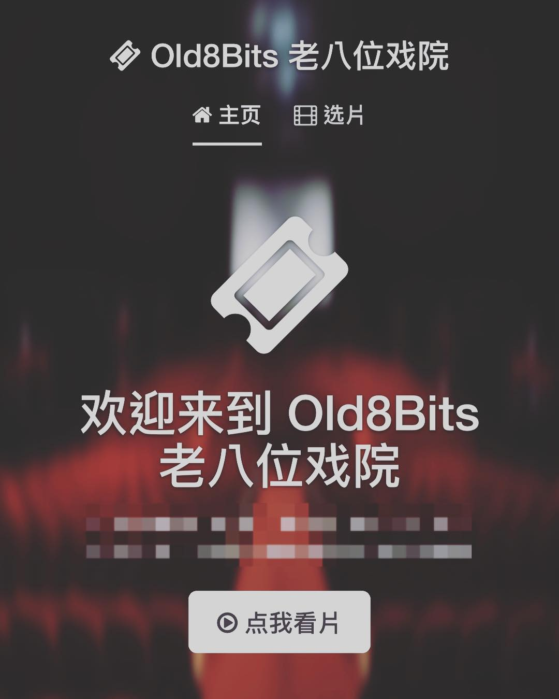
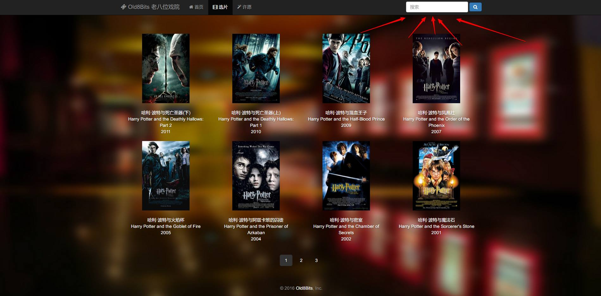

再见,老八位戏院
你好。
当你看到这行字的时候，老八位戏院已经如期倒闭了。
当然它的死刑是提前判好的，倒闭了是正常了，所以我用了「如期」这个词。
从2016年11月1日正式上线，到2018年8月29日闭站，总计666天。
（666这个数字真的是刚好，不是我设计好的，真TM6……）
在这666天的时间里，不管你从哪天开始发现了老八位，感谢你这段时间以来的支持。
这个网站的初心，完全是因为实验室网快，下片快，那么怎样把实验室下来的片让我在房间里能看呢？
于是只上过非常简单网页课的我，撸起袖子就瞎J8写了一个。
至于一开始长啥样我很遗憾没有截图完整保留下来，
但是旧版首页的样子还是发了一个Instagram (欢迎关注)，
旧版选片发了个FB，
算是无意留下了一点旧版存在的影子。
网站的名字：老八位戏院——「老八位」三个字其实是我们当地方言骂人的话的表音，
我跟朋友间开玩笑用的称呼，
原本意思是「老牌位」(人死之后立的那个)。
但是又和我很喜欢的8-Bit的「八位」正好重合了，所以在看起来是有一股复古风的名字（至少我这么觉得吧？）。
这个东西挺简单的，主体结构上就是用现成的轮子拼了一下，可能厉害一点的人一两天就能弄出来，但是我还是花了很多时间和心思在上面。
一开始只有两个板块：基础功能「选片」和为了知道大家想看什么片的「许愿」版块。
只有电影，没有剧集。后来才根据剧集特点重新写了一个版块。
感谢你们这些优质用户，提了很多功能上的建议。
根据用户需求加上的收藏、历史，首页快速定位到上一次播放，
还有没屁用的签到系统，在倒闭前夕加上但是没什么人用的推荐系统等等。
播放器的功能大部分都是参考YouTube，把一个视频网站该有的功能都加上。
比如记录上次播放时间，播放速率调整，字幕切换，还有拖动进度条可以快速预览等等。
还有一些功能是我拍脑袋想的，比如首页放预告片，很有派头的同时也符合看电影前先放预告的习惯。
一开始比较简陋，我就做了一个拟物风格，用大图遮丑。
全套界面也是自己拍脑袋想的，还好也没（听到）有人说很难看。
LOGO是拿了古代也不知道是几个书法家的字拼起来的（懒）。
而这几年的一个趋势，大家都在用扁平大圆角加阴影和对比度很大的渐变色。
所以某天，我也偷偷把影片封面改成这样了。
虽然是个小网站，我尽力让跨平台体验变得好一些，网站能做响应式布局都做了（但是还是很垃圾，移动端应该重写一份的），用了HTML5播放器和全站的HTTPS。
也有看不见的安全性升级，这里就不多废话了。
开玩笑就是自己一个人做了产品、程序、设计和运营四个职位。
说运营是假的，本来也就是有版权问题，没办法做成开放的东西。全靠熟人赏脸来看一下。
不过到倒闭居然也有100多个注册用户，活跃用户大概占一半左右吧。
当然，作为一个垃圾网站以及练手项目，局限性也很大，最大的限制是硬盘容量。
我只能靠一个1T的硬盘全部拿来装它，到倒闭前半年一直处于装满、移掉没人看的片、再装满……这样的循环中。
中间升级环境PHP5到PHP7的时候，贪图方便直接把MySQL的Data文件复制了一份，没有导出，然后险些完美达成了《MySQL：从删库到跑路》的成就。
作为一个练手项目，它倒还真的让我熟了一下PHP，JavaScript，MySQL，Apache，Python，FFMPEG……
当然看着自己的垃圾代码也很难受，自己心里也有个数，如果要重做，也有一个想法怎么重构了。
在它存在的这段时间，如果能有幸能与你相遇，是它短暂生命中的荣耀。
希望未来，有缘的话，我们能够再见。
2018.8.29 于新竹
感谢你有耐心看到这里。
如果你还有什么想说的，欢迎在下面留言。